Smart contracts in human language
Zenroom is software inspired by the language-theoretical security research and it allows to express cryptographic operations in a readable domain-specific language called Zencode.
For the theoretical background see the Zencode Whitepaper.
For an introduction see this blog post: Smart contracts for the English speaker.
Here we go with the tutorial to learn the Zencode language!
Attribute Based Credentials

Attribute Based Credentials are a powerful and complex feature implemented using the Coconut crypto scheme. We start this tutorial with the most complex functionality available in Zenroom to show how the Zencode language really simplifies it all.
Let's imagine 3 different subjects for our scenarios:
- Mad Hatter is a well known issuer in Wonderland
- Wonderland is an open space (a blockchain!) and all inhabitants can check the validity of proofs
- Alice just arrived: to create proofs she'll request a credential to the issuer MadHatter
When Alice is in possession of credentials then she can create a proof any time she wants using as input:
- the credentials
- her credential keypair
- the verifier by MadHatter
Scenario coconut: create proof Given that I am known as 'Alice' and I have my valid 'credential keypair' and I have a valid 'verifier' from 'MadHatter' and I have my valid 'credentials' When I aggregate the verifiers and I create the credential proof Then print the 'credential proof'
All these "things" (credentials, proofs, etc.) are data structures that can be used as input and received as output of Zencode functions. For instance a proof can be print in JSON format and looks a bit list this:
{ "credential_proof" : { "pi_v" : { "c" : "u64:tBrCGawWYEAi55_hHIPq0JT3OaapOebSHVW0GhjJcAk", "rr" : "u64:J7R3FXsI2dcfyZRCqWA8fDYijG39P16LvGpX90wtCWw", "rm" : "u64:QoG-28CNTAY3Ir4SQqVoK1ZpTlzOnXxX6Xtq5KMIxpo" }, "nu" : "u64:BA77WYvBRsc53uAyrqTjuUdptJPZbcTlzr9icizm0...", "sigma_prime" : { "h_prime" : "u64:BB9AM5xjWPxsZ47zh1WAmFymru66W6YuK...", "s_prime" : "u64:BAGYNM6JO0wRAGE87_-bQVuhUXeEoeJrh..." }, "kappa" : "u64:GFVYsudbHOJNzPl3ZL0_VzB_DRvrPKF26OCZR9..." }, "zenroom" : { "scenario" : "coconut", "encoding" : "url64", "version" : "1.0.0" } }
Anyone can verify proofs using as input:
- the credential proof
- the verifier by MadHatter
Scenario coconut: verify proof Given that I have a valid 'verifier' from 'MadHatter' and I have a valid 'credential proof' When I aggregate the verifiers and I verify the credential proof Then print 'Success' 'OK' as 'string'
What is so special about these proofs? Well! Alice cannot be followed by her trail of proofs: she can produce an infinite number of proofs, always different from one another, for anyone to recognise the credential without even knowing who she is.

Imagine that once Alice is holding credentials she can enter any room in Wonderland and drop a proof in the chest at its entrance: this proof can be verified by anyone without disclosing Alice's identity.
The flow described above is pretty simple, but the steps to setup the credential are a bit more complex. Lets start using real names from now on:
- Alice is a credential Holder
- MadHatter is a credential Issuer
- Wonderland is a public Blockchain
- Anyone is any peer connected to the blockchain

To add more detail, the sequence is:

1 MadHatter generates an issuer keypair
| Input | Zencode | Output |
|---|---|---|
| - | Scenario coconut: issuer keygen Given that I am known as 'MadHatter' When I create the issuer keypair Then print my 'issuer keypair' |
issuer_keypair |
1a MadHatter publishes the verification key
| Input | Zencode | Output |
|---|---|---|
| issuer_keypair | Scenario coconut: publish verifier Given that I am known as 'MadHatter' and I have my valid 'verifier' Then print my 'verifier' |
issuer_verifier |
2 Alice generates her credential keypair
| Input | Zencode | Output |
|---|---|---|
| - | Scenario coconut: credential keygen Given that I am known as 'Alice' When I create the credential keypair Then print my 'credential keypair' |
credential_keypair |
3 Alice sends her credential signature request
| Input | Zencode | Output |
|---|---|---|
| credential_keypair | Scenario coconut: create request Given that I am known as 'Alice' and I have my valid 'credential keypair' When I create the credential request Then print my 'credential request' |
credential_request |
4 MadHatter decides to sign a credential signature request
| Input | Zencode | Output |
|---|---|---|
| credential_request issuer_keypair | Scenario coconut: issuer sign Given that I am known as 'MadHatter' and I have my valid 'issuer keypair' and I have a valid 'credential request' When I create the credential signature Then print the 'credential signature' and print the 'verifier' |
issuer_signature |
5 Alice receives and aggregates the signed credential
| Input | Zencode | Output |
|---|---|---|
| issuer_signature credential_keypair | Scenario coconut: aggregate signature Given that I am known as 'Alice' and I have my valid 'credential keypair' and I have a valid 'credential signature' When I create the credentials Then print my 'credentials' and print my 'credential keypair' |
credential |
Centralized credential issuance
Lets see how flexible is Zencode.
The flow described above is for a fully decentralized issuance of credentials where only the Holder is in possession of the credential keypair needed to produce a credential proof.
But let's immagine a much more simple use-case for a more centralized system where the Issuer provides the Holder with everything ready to go to produce zero knowledge credential proofs.
The implementation is very, very simple: just line up all the When blocks where the different operations are done at different times and print the results all together!
Scenario coconut Given that I am known as 'Issuer' When I create the issuer keypair and I create the credential keypair and I create the credential request and I create the credential signature and I create the credentials Then print the 'credentials' and print the 'credential keypair'
This will produce credentials that anyone can take and run. Just beware that in this simplified version of ABC the Issuer may maliciously keep the credential keypair and impersonate the Holder.
Try it on your system!
Impatient to give it a spin? run Zencode scripts locally to see what are the files produced!
Make sure that Zenroom is installed on your PC and then go to the...
Zero Knowledge Proofs
There is more to this of course: Zencode supports several features based on pairing elliptic curve arithmetics and in particular:
- non-interactive zero knowedge proofs (also known as ZKP or ZK-Snarks)
- threshold credentials with multiple decentralised issuers
- homomorphic encryption for numeric counters
These are all very useful features for architectures based on the decentralisation of trust, typical of DLT and blockchain based systems, as well for off-line and non-interactive authentication.
The Zencode language leverages two main scenarios, more will be implemented in the future.
- Attribute Based Credentials (ABC) where issuer verification keys represent specific credentials
- A Petition system based on ABC and homomorphic encryption
Three more are in the work and they are:
- Anonymous proxy validation scheme
- Token thumbler to privately transfer numeric assets
- Private credential revokation
Symmetric encryption
This is a simple tecnique to hide a secret using a common password known to all people.
The algorithm used is AES-GCM with an optional authenticated header (AEAD)
It is applied using 3 arguments:
messageis the object to be encryptedsecretis the secret password used to encryptheader(optional) the authenticated header
The arguments must be already given at the moment of using the when block:
When I encrypt the secret message 'whisper' with 'my password'
The output is returned in secret message and it looks like:
{"secret_message": {"iv":"u64:aeBQ9CrdLfg24_QhtTJ0c1eEamvprfoOiVVbcfuyUFM", "header":"u64:dGhpc19pc190aGVfaGVhZGVy", "text":"u64:DaOlZtRNS-j9671noYQuN0c-PrxdhbjSZVQLYdNw-5W-rA5Gd36bNUm01srnleY", "checksum":"u64:ewKri7ghI3nO0bPJtwZcbA"}, "zenroom":{"curve":"goldilocks","encoding":"url64","version":"1.0.0"}}
To decode make sure to have that secret password and that a valid secret message is given, then use:
When I decrypt the secret message with 'my password'
So let's imagine I want to share a secret with someone and send secret messages encrypted with it:

I will need 3 Zencode contracts executed at different times:
1. I generate a strong random secret
rule check version 1.0.0 Scenario simple: Generate a random secret Given nothing When I create a random 'secret' Then print the 'secret'
-> then save the secret output and send it
2. I encrypt a message using this secret
rule check version 1.0.0 Scenario simple: Encrypt a message with the secret Given I have a 'secret' When I write 'a very short but very very confidential message' in 'whisper' and I write 'this is the header' in 'header' and I encrypt the secret message 'whisper' with 'secret' Then print the 'secret message'
-> then save the secret message and send it
3. Who has my secret can decrypt the secret message
rule check version 1.0.0 Scenario simple: Decrypt the message with the secret Given i have a 'secret' and i have a valid 'secret message' When I decrypt the secret message with 'secret' Then print as 'string' the 'text' inside 'message' and print as 'string' the 'header' inside 'message'
Of course the secret must be known by all participats and that's the dangerous part, since it could be stolen at the moment is told.
We solve this problem using public-key cryptography, also known as a-symmetric encryption, explained in the next section.
Asymmetric encryption
We use asymmetric encryption (or public key cryptography) when we want to introduce the possession of keypairs (public and private) both by Alice and Bob: this way there is no need for a single secret to be known to both.
Fortunately it is pretty simple to do using Zencode in 2 steps
Key generation and exchange
In this phase each participant will create his/her own keypair, store it and communicate the public key to the other.
The statement to generate a keypair (public and private keys) is simple:
When I create the keypair
It will produce something like this:
"Alice": { "keypair": { "private_key": "u64:F_NaS3Y6Xw6BW...", "public_key": "u64:BLG0OGDwzP_gY41TZgGpUB4lTYCgpx9BJVScxSQAfwqEi..." } }
Where the public key is usually a longer octet and actually an Elliptic Curve Point coordinate.
There is nothing preventing an host application to separate these JSON fields and store them in any secure way.
Here we demonstrate how to create keypairs as well separate them using Zencode:
- 2 contracts to create Alice and Bob keypairs
- 2 contracts to separate the public key from the private key for each

After both Alice and Bob have their own keypairs and they both know each other public key we can move forward to do asymmetric encryption and signatures.
1.a Alice keygen
Rule check version 1.0.0 Scenario 'simple': Alice generate a keypair Given that I am known as 'Alice' When I create the keypair Then print my data
2.a Alice pubkey
Rule check version 1.0.0 Scenario 'simple': Alice publishes her public key Given that I am known as 'Alice' and I have my valid 'public key' Then print my data
1.b Bob keygen
Rule check version 1.0.0 Scenario 'simple': Bob generate a keypair Given that I am known as 'Bob' When I create the keypair Then print my data
2.b Bob pubkey
Rule check version 1.0.0 Scenario 'simple': Bob publishes his public key Given that I am known as 'Bob' and I have my valid 'public key' Then print my data
Public-key Encryption (ECDH)
Public key encryption is similar to the asymmetric
encryption explained in the previous section,
with a difference: the for clause indicates the public key of the
recipient.
Before getting to the encryption 2 other objects must be given:
keypairis one's own public and private keyspublic keyfrom the intended recipient
So a typical Given section preparing for encryption looks like:
Given that I am known as 'Alice' and I have my valid 'keypair' and I have a valid 'public key' from 'Bob'
which accepts an input like:
[ {"Bob": {"public_key":"u64:BGF59uMP0DkHoTjMT..."} }, {"Alice": { "keypair": { "private_key": "u64:F_NaS3Y6Xw6BW...", "public_key": "u64:BLG0OGDwzP_gY41TZgGpUB4lTYCgpx9BJVScxSQAfwqEi..." } } } ]
then the Zencode contract continues with the line:
When I encrypt the secret message 'whisper' for 'Bob'
which encrypts and stores results in secret message; also in this case header may be given, then is included in the encryption as an authenticated clear-text section.

1. Alice encrypts the message using Bob's public key
Rule check version 1.0.0 Scenario 'simple': Alice encrypts a message for Bob Given that I am known as 'Alice' and I have my valid 'keypair' and I have a valid 'public key' from 'Bob' When I write 'This is my secret message.' in 'message' and I write 'This is the header' in 'header' and I encrypt the message for 'Bob' Then print the 'secret message'
2. Bob prepares a keyring with Alice's public key
Rule check version 1.0.0 Scenario 'simple': Bob gathers public keys in his keyring Given that I am 'Bob' and I have my valid 'keypair' and I have a valid 'public key' from 'Alice' Then print my 'keypair' and print the 'public key'
3. Bob decrypts the message using Alice's public key
Rule check version 1.0.0 Scenario 'simple': Bob decrypts the message from Alice Given that I am known as 'Bob' and I have my valid 'keypair' and I have a valid 'public key' from 'Alice' and I have a valid 'secret message' When I decrypt the secret message from 'Alice' Then print as 'string' the 'message' and print as 'string' the 'header' inside 'secret message'
In this basic example the session key for encryption is made combining the private key of Alice and the public key of Bob (or viceversa).
When I write 'my secret for you' in 'message' and I write 'an authenticated message' in 'header'
The decryption will always check that the header hasn't changed, maintaining the integrity of the string which may contain important public information that accompany the secret.
Public-key Signature (ECDSA)
Public-key signing allows to verify the integrity of a message by knowing the public key of all those who have signed it.
It is very useful when in need of authenticating documents: any change to the content of a document, even one single bit, will make the verification fail, showing that something has been tampered with.
The one signing only needs his/her own keypair, so the key setup will be made by the lines:
Given that I am known as 'Alice' and I have my valid 'keypair'
then assuming that the document to sign is in draft, Alice can
proceed signing it with:
and I create the signature of 'draft'
which will produce a new object signature to be printed along the
draft: the original message stays intact and the signature is detached.
On the other side Bob will need Alice's public key to verify the signature with the line:
When I verify the 'draft' is signed by 'Alice'
which will fail in case the signature is invalid or the document has been tampered with.

Here we continue assuming that the keyrings are already prepared with public/private keypairs and the public keypair of the correspondent.
1. Alice signs a message for Bob
Rule check version 1.0.0 Scenario 'simple': Alice signs a message for Bob Given that I am known as 'Alice' and I have my valid 'keypair' When I write 'This is my signed message to Bob.' in 'draft' and I create the signature of 'draft' Then print my 'signature' and print my 'draft'
1. Bob verifies the signed message from Alice
rule check version 1.0.0 Scenario 'simple': Bob verifies the signature from Alice Given that I am known as 'Bob' and I have a valid 'public key' from 'Alice' and I have a valid 'signature' from 'Alice' and I have a 'draft' When I verify the 'draft' is signed by 'Alice' Then print 'signature' 'correct' as 'string' and print as 'string' the 'draft'
In this example Alice uses her private key to sign and authenticate a message. Bob or anyone else can use Alice's public key to prove that the integrity of the message is kept intact and that she signed it.
Syntax and Memory model
Zencode contracts operate in 3 phases:
- Given - validates the input
- When - processes the contents
- Then - prints out the results
The 3 separate blocks of code also correspond to 3 separate memory areas, sealed by some security measures.

All data processed has first to pass the validation phase according to scenario specific data schemas.
Good Practice: start your Zencode noting down the Zenroom version you are using!
rule check version 1.0.0
Given
Self introduction
This affects my statements
Given I introduce myself as '' Given I am known as '' Given I am '' Given I have my '' Given I have my valid ''
Data provided as input (from data and keys) is all imported automatically from JSON or CBOR binary formats.
Scenarios can add Schema for specific data validation mapped to words like: signature, proof or secret.
Data input
Given I have a '' Given I have a valid '' Given I have a '' inside '' Given I have a valid '' inside '' Given I have a '' from '' Given I have a valid '' from '' Given the '' is valid
or check emptyness:
Given nothing
When valid is specified then extra checks are made on input value, mostly according to the scenario
Settings
rule input encoding [ url64 | base64 | hex | bin ] rule input format [ json | cbor ]
When
Processing data is done in the when block. Also scenarios add statements to this block.
Without extensions, these are the basic functions available
when: - {when: 'I append '''' to '''''} - {when: 'I write '''' in '''''} - {when: 'I set '''' to '''''} - {when: 'I create a random '''''} - {when: 'I create a random array of '''' elements'} - {when: 'I create a random '''' bit array of '''' elements'} - {when: 'I set '''' as '''' with '''''} - {when: 'I append '''' as '''' to '''''} - {when: 'I write '''' as '''' in '''''}
Then
Output is all exported in JSON or CBOR
then: - {then: 'print '''' '''''} - {then: 'print all data'} - {then: 'print my data'} - {then: 'print my data'} - {then: 'print my '''''} - {then: 'print as '''' my '''''} - {then: 'print my '''' as '''''} - {then: 'print the '''''} - {then: 'print as '''' the '''''} - {then: 'print as '''' the '''' inside '''''}
Settings:
rule output encoding [ url64 | base64 | hex | bin ] rule output format [ json | cbor ]